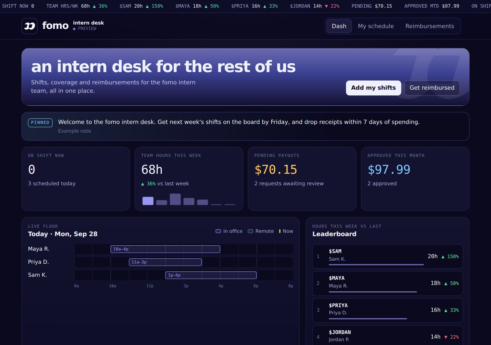
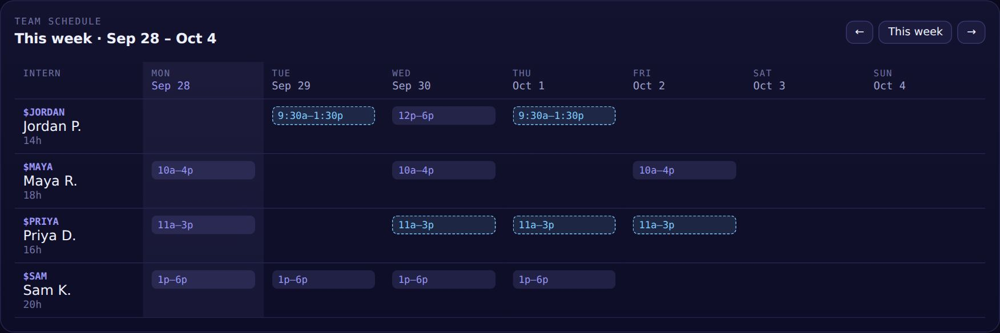
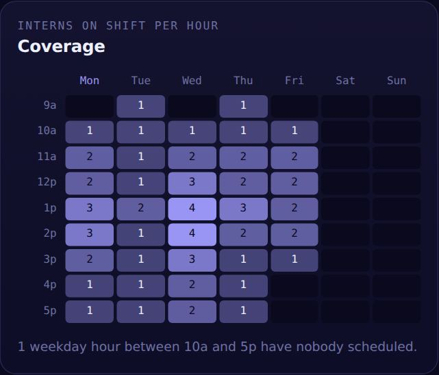
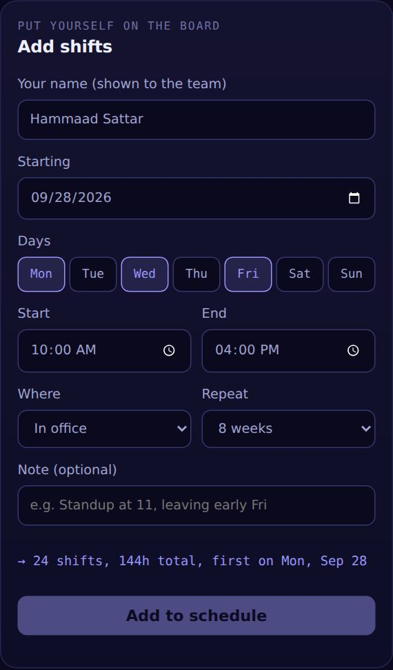
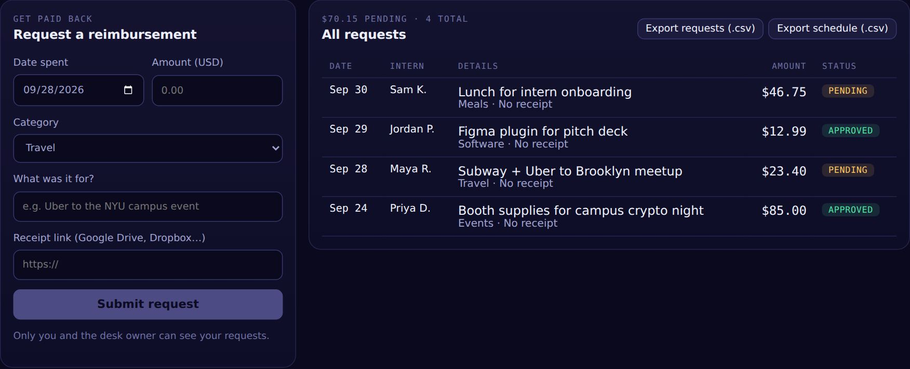

an intern desk for the rest of us
One place for every intern's schedule, live office coverage and reimbursement requests, with approvals and exports for the intern manager. Designed and built by Hammaad Sattar.
The live desk opens in Claude. Sign in with the email address Hammaad invited.

See the whole team at a glance
The first thing you see is who is working, how many hours the team is putting in, and what money is waiting on a decision.
- A trading-style ticker with every intern's weekly hours and change vs last week
- Today's live floor: a timeline of who's on, with a line for right now
- A leaderboard of hours this week, up or down on last week
- A full weekly schedule you can page back and forward through

Spot the gaps before they happen
A heatmap shows how many interns are on shift for every hour of the week, and calls out weekday hours between 10a and 5p with nobody scheduled.

Interns book their own shifts in seconds
Each intern picks their days, hours and whether they're in office or remote, then repeats it for as many weeks as they need.
- Pick several days at once and repeat for up to 12 weeks
- Preview the number of shifts and hours before saving
- Copy this week's shifts into next week with one tap
- Duplicate shifts are skipped automatically

Requests, approvals and exports in one flow
Interns submit what they spent with a receipt link. The desk owner approves or rejects each one, and can export everything as a spreadsheet.
- Interns only see their own requests
- Pending, approved and rejected statuses, with undo
- One-click CSV export of requests and the full schedule
- A pinned note for announcements to the whole team

How to open the live desk
Get an invite
Ask Hammaad to add your email to the desk. Managers and interns are invited as Editors so they can save.
Sign in to Claude
Use the same email the invite went to. A free Claude account works.